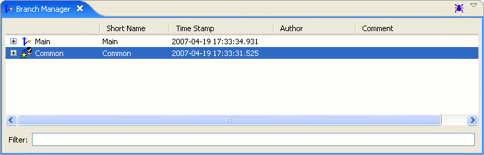

Branch Manager View

Purpose
The Branch Manager View is used to display all of the branches in Skynet, as well as details for the transactions on each branch.
Branches and transactions can be sorted by clicking on the column heading for the column to sort by. Initially, the data will be sorted in
ascending order. Clicking the same column multiple times will toggle the sorting between ascending and descending.
Locating branches can also be aided by filtering or using favorites.
Icons
 Base image for branches
Base image for branches Base image for branches that are under change managment
Base image for branches that are under change managment Overlay to mark branch as the default
Overlay to mark branch as the default Overlay to mark branch as a favorite
Overlay to mark branch as a favorite- Image for transactions
 Base image for relation links
Base image for relation links Base image for attributes
Base image for attributes Overlay to mark item as new
Overlay to mark item as new Overlay to mark item as modified
Overlay to mark item as modified Overlay to mark item as deleted
Overlay to mark item as deleted